Cosmic Retune · Visual field
Inner views.
Wider worlds.
A collection of possible futures, seen from within. Space to look further, linger, and let another possibility take shape.

A little room for possibility.
Choose an image. Stay as long as you like.
12 views

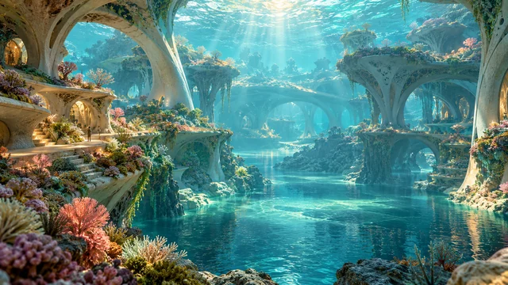
The Inner Tide

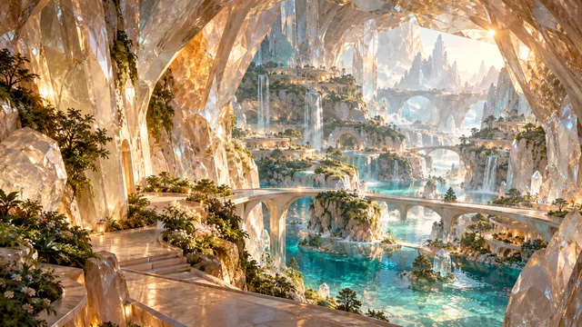
The Crystal Sanctuary
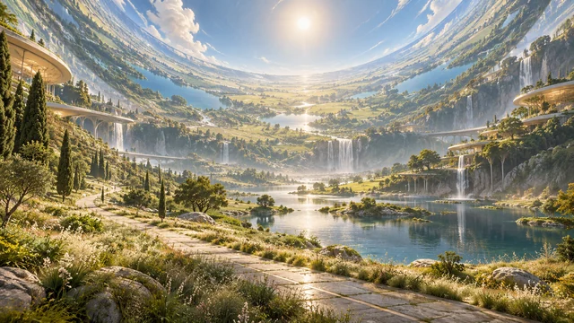
A Garden Around the Sky

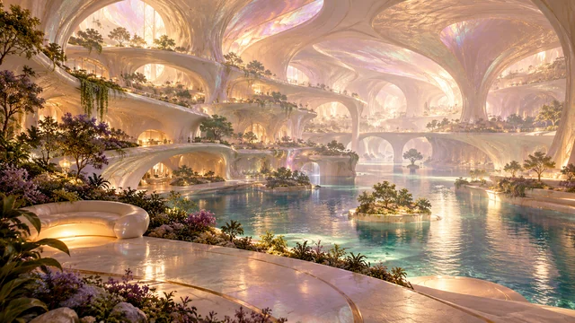
Rooms of the Tide

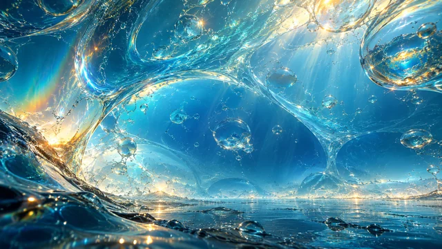
Within a Drop

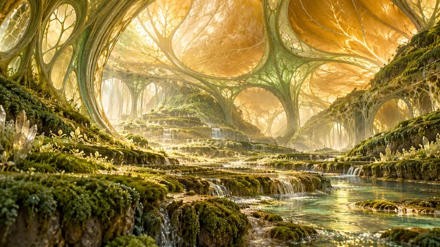
The Unfolding Seed

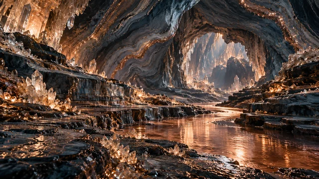
Where Stone Holds Light

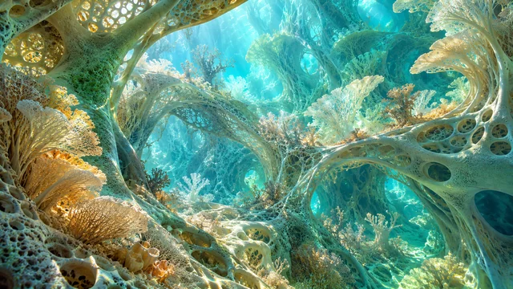
A Living Lattice

The Space Light Makes

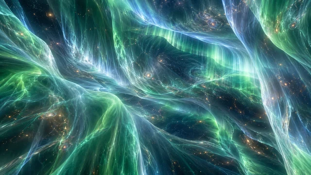
Inside the Aurora

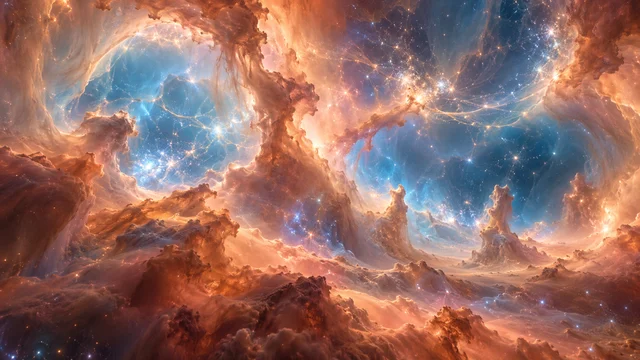
The Quiet Between Stars

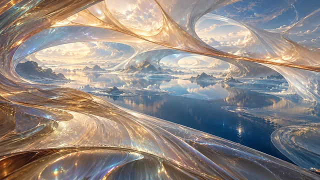
A Wider Interior

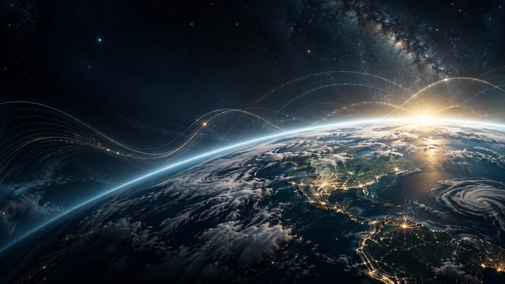
The Larger View

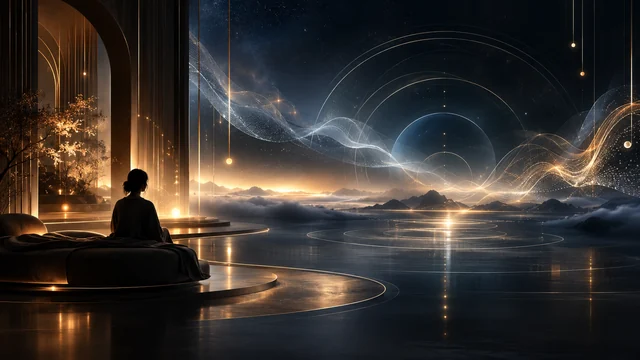
The Listening Room

Cosmic Mind

Resonance Field
There is more than one way to imagine what comes next.
Visual explorations created in collaboration with AI.